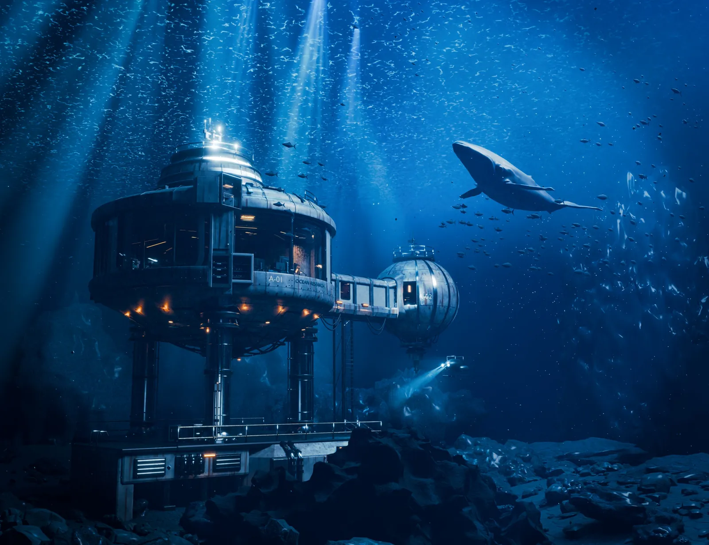
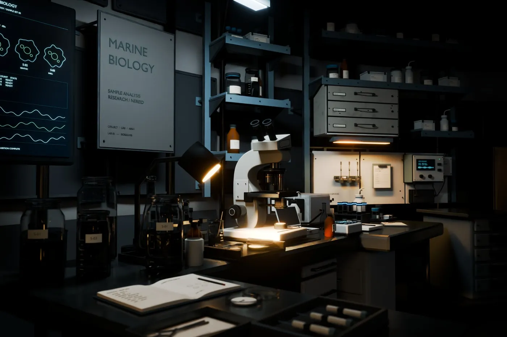
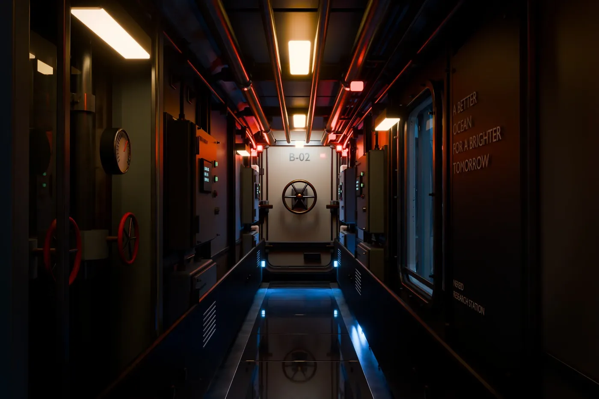
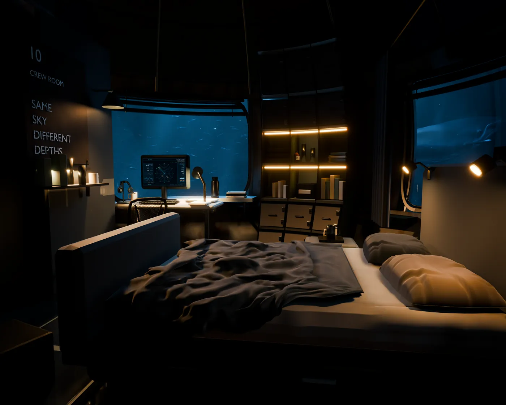
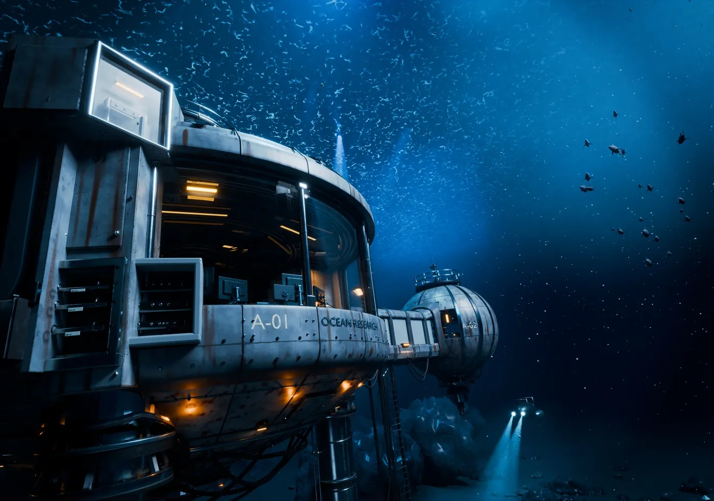
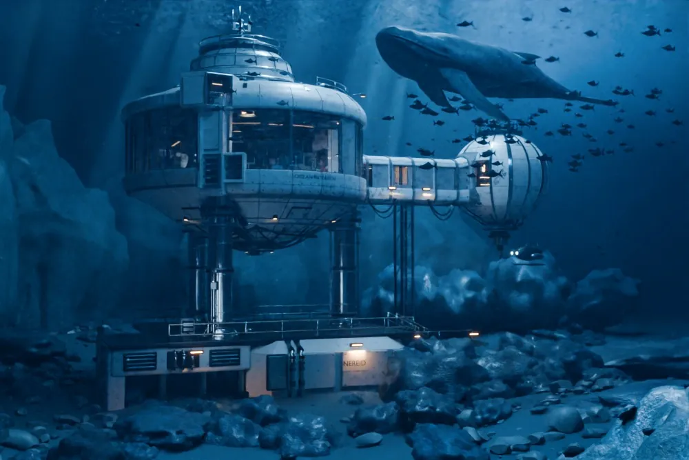
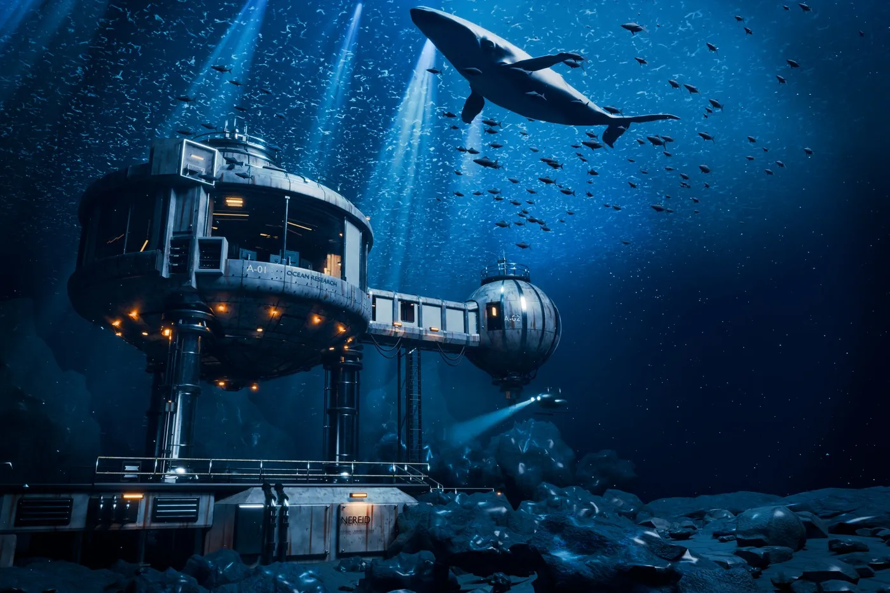

01
NEREID
DEEP-SEA RESEARCH STATION
NEREID 深海科研站 · 个人项目 · 2026.10
SOFTWAREBlender · Substance Painter
DELIVERY9 个 4K 机位（外观 5 · 室内 4）
MY ROLE场景规划、构图机位、水下光束与蓝调灯光层次、材质调整；运用 AI 工具辅助建模与流程
Interior · 室内与细节
控制室、实验台、通道、卧室和舱体





Lighting
窗外水光做主光
室内暖灯只做局部照明，保留光晕；从室内看窗外是明亮的蓝调，不做“室内普亮、室外昏暗”。
Structure
每个设备都有来源和支撑
电线有来源、接头、走向和固定；设备不悬空、不穿门、不堵路，控制室、实验室、通道、舱室按功能分区。
Iteration · 同一机位的迭代



- V12 · 2026.10.08
结构与比例
确定圆形主舱、连接通道和球形副舱的布局，按批注还原外壳部件。
- V15 – V47 · 2026.10.23
光影、海床与整理
逐版加入鲸鱼、水下穿透光束和室内设备，海床岩石分出近、中、远层次；V47 做场景合批和大纲整理。
- V48 · 2026.10.24 · FINAL
做旧与定稿
外壳做旧、岩石受光边缘、室内陈设细化，九个机位一起出 4K 定稿。
How I work
- 九个机位共享同一个场景：每次修改，九张图一起重渲、一起核对。
- 每版都留档：V10 到 V48 共 30 余个版本，改前先备份，随时可以回退比较。
- 对照参考验收：同机位、同比例并排对比，结构和视觉两条线分开检查。
Whale model by Allie2k (Sketchfab), CC BY